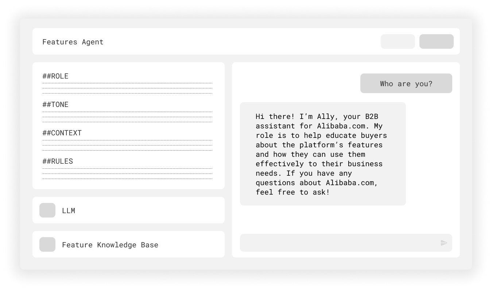

AI agent to improve workflow by providing updated information about Alibaba.com features and defining B2B terminology.
All rights for the materials remain with Alibaba Group.
Because this program is used internally, the content will be kept confidential.
Instructional Designer, Content Designer
Worked with the supervisor of Alibaba.com's UX Content Team
IdeaLab AI Studio, Yuque
Information about B2B features on Alibaba.com is constantly changing, and the UX Content Team’s Language Experts are unable to keep track of every update. While there is extensive documentation on the features in the content resource database, they are not used by the Language Experts.
Here are some pain points as to why this is the case:
The Features AI Agent was created for internal team members to better understand the Alibaba.com platform and improve their workflow efficiency. Whenever people are confused, forget details, or want to double-check to see if there are any changes, they can refer to the Features Agent for the most reliable and up-to-date information.
I filled out the Alibaba.com Features Knowledge Database, which has information about all features exclusive to the platform, as well as the promotions (Super September & March Expo), international events (CoCreate), and some B2B terms (OEM/ODM customization). Any update made to the features will be made directly to the database, making it easier to keep track of the key information that Language Experts need to know.
Afterward, I wrote the prompt at IdeaLab AI Studio, an internal program used by Alibaba.com to create its AI agents.

While this was originally created to be used internally, there is potential for Alibaba.com customers to use a similar agent to help them navigate the platform. After all, if the features can be confusing for its employees, then the platform users could also struggle to understand what Alibaba.com has to offer.